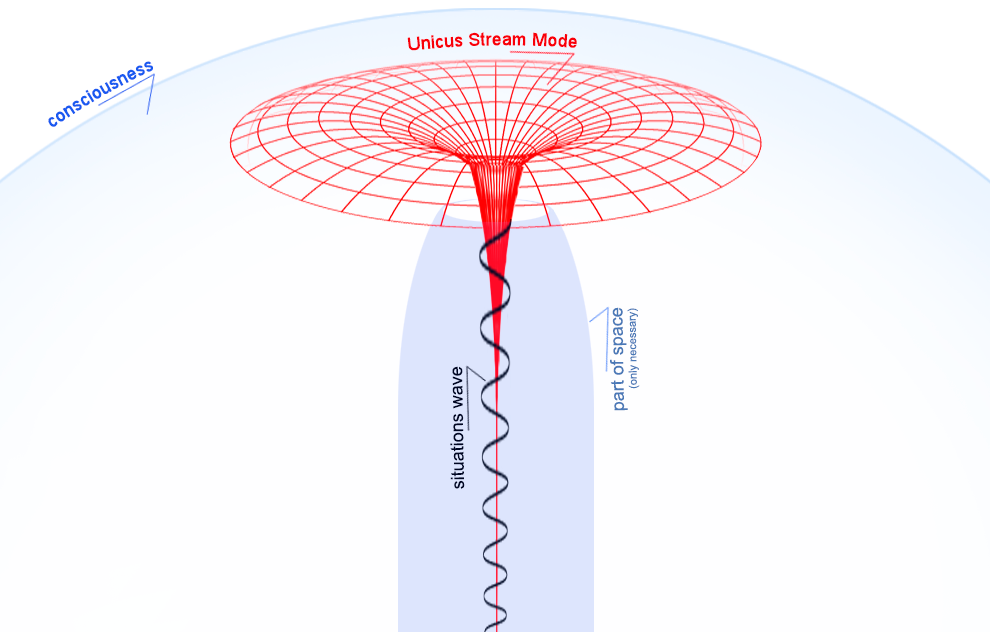

полный текст книги:
Ничто и Точка (предисловие)
Цель
Созерцаемое
Сущность
Сознание
Двухаспектная Сущность
Четвертое измерение и ...
Общество и Человечество
Пятое измерение и ...
Первовозникновение
Акт "Я"
Процесс изучения Акта "Я"
Смысл Бытия
Развитие Сущности
Коллективная реальность
Система развития Сущности
Эхо (отражение)
Реальный аспект Глоб. "Я"
О мировоззрении
Пространство-время
Осношение к Себе
Отношение к своему телу
Лень
Страх
Надежда (Ожидание Чуда)
Адаптация
Тождество личности
Отношение [Рассудок|Тело]
Свобода Воли
Трудная проблема Сознания
Неразличимость и идентичн.
Материя
Гносеология
Эпистемология
Разделение
на главную страницу сайта
— глава семнадцатая —
————————————————————————————
————————————————————————————
ЭХО (ОТРАЖЕНИЕ)
Эхо, или Отражение – мы недостаточно знаем и об этом. Возможно в процессе исследований получится изменить это мнение. Приглашаем Вас участвовать (время не имеет значения). Сначала, порассуждаем о чистом отражении:
Что между двумя зеркалами? Представление ограничено размерами и степенью прозрачности стекла. Напоминает образную четырехмерность, без всяких объектов. Если бы объекты плотно располагались в исходном пространстве, прерывая линию отражения между двумя зеркалами, то данная имитация(‘?’) оказалась бы невозможной. Каждый уровень каждого отражения, представляет собой малую часть, пусть и ‘эфемерного в эфемерном’, но отдельного бесконечного трехмерного пространства (это очевидно);
Причем, оно представлено с обеих сторон наблюдателя, то есть если, к примеру, посмотреть, на третий уровень от наблюдателя, то в зеркале напротив этот уровень будет тоже третьим <по счету> пространством (рис. 17) что и с обратной стороны. На втором же уровне, Вы видите свой затылок и смотрите в лицо ‘Того Себя’, который в третьем уровне :). Само зрелище привлекает внимание, вызывает интерес наблюдателя, и наводит на разные размышления;
наблюдатель между двумя зеркалами (красная точка в центре)

рис. 17
Мы внутри своего уровня, и будто заглядываем в некий ‘позволительный коридорчик’, но в таком представлении все уровни оказываются снаружи – от нашего, исходного;
В условиях реальности (некоторые называют эти условия Материальным Миром) все происходит последовательно, поэтому, получается, что каждый следующий удаленный уровень, находится, пусть и с небольшой разницей, но в ‘более далеком прошлом’. Если речь об отражении, тогда, отразившись от одной поверхности, фотоны отражаются от другой, затем от следующей. Значит это логично, хотя и не совсем современно, потому что доказывать последо-вательное отражение фотонов, окажется делом крайне хлопотным – скорее подтвердится что всё одновременно;
Используя зеркала, как наглядную модель, – представить четвертое измерение, и ‘геометрию’ четырехмерности, Вам будет немного проще, только там ‘внутрь и наружу’ то есть, находясь между зеркалами, в этом упражнении, представьте соответственно, преобразовать не сложно;
Мы привыкли воспринимать Эхо как нечто очень простое и незначительное. Кстати, здесь мы используем в одном ряду понятия «отражение» и «эхо» – это одно и то же, но, люди привыкли, ‘звуковое отражение’ называть Эхом, а ‘световое эхо’ называть Отражением. Здесь, предлагаем использовать оба понятия с пониманием равнозначности;
Эхо, Отражение – всенаправленный поток отражающихся от объектов фотонов, и всех прочих? частиц. При наличии объектов, они реализуются не только для созерцательного метода восприятия, но для любого другого, из доступных человеку, либо иному ‘существу-участнику-ситуации’, в том числе звукового, рентгеновского, ультрафиолетового, инфракрасного, и т.д., их вероятно много неизвестных, все перечислить мы не в состоянии, по понятной причине, но для каждого вида частиц, нужен соответствующий метод и механизм восприятия (а для некоторых и определенная среда, так например звуковая волна не может распростра-няться в условиях вакуума). Любые методы, кроме самых обычных свойственных человеку, требуют использования специального оборудования – иначе восприятие окажется невозможным, а в некоторых случаях опасным для жизни;
* * *
Эхо обеспечивает осуществление динамики в процессах в условиях реализации реальности – позволяя наблюдать смещение, относительно текущих координат (объектов). Следовательно, Реализация Реальности невозможна без этих Условий, и Рассудок воспроизводит Эхо (то есть факт Отражения), как необходимое <Фундаментальное> Условие Созерцания;
* * *
Предлагаем рассмотреть это так, как воспроизводит Рассудок:
Благодаря скорости фотонов, достигается плавность динамики и качество Ситуаций соответствует самой высокой квалификации. Задержки на передачу и обработку сигналов в ‘механизме реализации реальности’ полностью отсутствуют, но – они значительны при работе Рассудка;
Световой поток излучаемый «Эмиттером», через любой источник света, достигает определенной координатной точки (граница объекта, будь то сторона, или грань, это не важно), и меняет направление т.е. <мы называем это как> 'преломляется, или отражается в какую-либо сторону’, но также это происходит и в направлении ‘к сетчатке глаза’. Данный поток разветвляется многократно, буквально как разряженная жидкость заливая пространство фотонами и прочими частицами, коих, как нам уже известно великое множество, и каждая частица выполняет свою функцию;
Фотоны мы не видим, поэтому созерцаем только объекты относительно расположенные в пространстве. Или, иначе: Фотонами мы (люди) называем данные поступающие от «Сознания» к «Рассудку», через реализацию Реальности в Пространстве, и всё это, является компонентами в Едином Потоке Развития Сущности (это крайне абстрактно :). Учитывая ‘скорость света*’, свойства частиц и механизм созерцания, реализация происходит мгновенно. Скорость работы этого механизма обусловлена сверх доступностью «Сознания», которое, буквально ‘Пронизывает Весь Мир’, с одной позиции:
1. Статично, а с другой -
2. Одновременно.
Очевидное изменение относительности между объектами, осознается <воспринимается> нами непосредственно, или можно сказать ‘доступно для анализа’, и как мы привыкли говорить: «Это Доступно в Режиме Реального Времени» (мы часто перефразируем, это важная часть рассуждений);
*скорость света - актуальна когда подразумевается Реальность, и эфемерна, когда рассуждаем <в общем> ‘с позиции Сознания’;
Задумаемся о статичной волне. Но, сначала представим её активное чтение. Фотоны будто мечутся между объектами –> допустим ситуация, в периоде протяженностью в пять минут –> рассмотрим эту ситуацию словно в растянутом (как “труба”) пространстве –> зафиксируем и представим как единую волну, включающую параметры пространства;
волна и поток

Рис. 18
Еще раз заострим внимание, что все это, в целом, следует рассматривать именно как поток – ‘беспрерывный поток данных + процесс реализации’, то есть, активные функции рассудка и прочие механизмы. И если мы говорим: ‘фотон отражается от объекта’ – он по Сути словно проводник от объекта к клетке глаза (проводник которого нет!) и, всё это исключительно – в момент созерцания (см. рис. 18);
Мы наивно думали так: Пространство не пустой объем – заполнено фотонами и прочими частицами – это подобно наполнению разнородной жидкостью. Кроме ‘свободных частиц’, пространство заполнено воздухом, газами, и парами всех (!) элементов и соединений. Если задуматься, начинает казаться что процессуальная последовательность имеет обратный порядок, или и вовсе не имеет никакого, то есть, можно понять что объекта в предыдущий момент времени не было, но он реализуется как следствие, точнее – «как Следствие: данных содержащихся в волне, при их одновременном чтении». Процессы возникают, и именно одновременно, по привычке хочется сказать: 'происходят’, 'осуществляются', но нет. Динамика, это именно явление;
* * *
Подумайте о сравнении этого механизма с ‘программной реализацией’, вернее – наше представление основанное на математике и знании языков программирования, вводит нас в заблуждение, и мы начинаем накидывать шаблоны опыта на устройство живой Сущности, используем при этом термины из сферы IT. Но, конечно всё наоборот – устройство рассудка оказывает влияние на изобретение языков программирования. Так вот, если мы не видим процессы в настоящей, именно текущей и неразрывной динамике, а все это реализовано на основе статичных волн, через разные состояния объектов, как мы прежде и рассматривали, то все изучаемое нами, есть общая емкая волна, вместе с движением частиц, которых в общем нет, но при проявлении интереса они реализуются ‘как очередное основание’ и, как и динамика относительности – являются лишь условиями, кстати, не очень сложными (однако, мы выяснили, что сложность для Сущности не актуальна, как и время). Еще раз напомним – что мы не рассматриваем Мир, как фантастическую «Матрицу» в одноименном фильме, и даже напротив – Явленное нам, квалифицируется: Абсолютным, Совершенным, Вечным, Бесконечным, Идеальным, и конечно Самым Прекрасным;
Продолжим рассматривать процессуально. Для нас это приемлемо, понятно и привычно. Вполне вероятно, если часто и упрямо представлять четырех- и пятимерность, тщательно изучать механизмы созерцания, и реализации реальности, то со временем рассудок адаптируется, и будет мыслить на подобные темы более эффективно и адекватно. Мы это наблюдали, в среднем нужно 2-3 года, если заниматься с особым интересом 3-5 раз в неделю;
Надо учитывать, что мы получаем только прямые данные, то есть, отраженные фотоны несут на себе информацию последнего объекта который реализуется, и не содержат данных от прежних отражений (…а они вообще были?). Потому, мы созерцаем от одной до трех сторон куба, и не можем видеть четвертую сторону, однако, если бы фотон мог быть носителем данных о предпоследнем объекте, с которым он столкнулся – мы могли бы видеть трехмерно но этого не происходит и не может быть, что очевидно. На данный момент созерцаются плоские <2d> изображения, а трехмерность лишь понимается и осознается. Созерцание полноценно трехмерных объектов, значительно упростило бы понимание Структуры Четырехмерности, – по причине большего ‘логического потенциала Рассудка’. При особом стремлении это и сейчас доступно, …как и Пятимерность;
* * *
Когда мы смотрим в воду, или в зеркало, то между нами и зеркалом нет никаких объектов, поэтому мы видим только свое лицо. Физика отражения при этом остается прежней но если задуматься, очень подробно объясняет механизмы и принципы реализации объектов в пространстве. Теперь, включим осознанность, вспомним о механизме созерцания и о ‘феномене иллюминации частиц’, который является, и совершенным прототипом ‘программной реализации’, и чувственным психическим процессом, т.е. одновременно;
Отражение (Эхо), функционирует как транспорт данных в пределах пространства, и как часть механизма реализации Реальности, является не только созерцательным методом, но универсальным, психическим, звуковым, чувственным, и доступным посредством ощутимой (т.е. механической) вибрации, то есть – данный принцип представляет собой значительную часть фундаментальной основы реализации реальности, во всех ее аспектах и проявлениях, всех типов частиц, то есть, известных, и неизвестных нам, энергий и отношений, включая эмоциональные, а также и массовые социально-психологические. Например, всем известный Феномен с Искренним Намерением «Дать»* – вернет Всё обратно, причем многократно (как и любое Эхо). Кстати, нас буквально ‘окружают специалисты’ в этом нехитром деле, умеющие выбрать лучший угол подачи условных благ в массы (для обеспечения необходимой эффективности). Ясно зачем они это делают (желание –> Цель –> бизнес), и у них получается, но нам известно почему это работает;
*«Феномен с искренним намерением Дать» – обеспечивает функцию Отражения Искренней Заботы обратно, в сторону Источника. Произведенное, по причине «Заботы» – действие направлено в адрес «Глобального аспекта Сущности». Фальсификация не сработает – искренность не подделать;
Если исключить «Эхо», заблокировать Его в один момент, тогда в этот самый миг мы перестанем слышать звуки, как если бы космонавты <в открытом космосе> попытались общаться отключив переговорное устройство – без звука – только движения губ; Многие думают, что отключив ‘Эхо' не станет только отраженных звуков, что слышимость при этом сохранится, хотя будет ущербной, но нет - передача вибрации между атомами, это тот же самый Принцип Эхо. То есть, между атомами принцип распространения волн, происходит также, как и при отражении звука от стены.
Событий (столкновения и передачи волн) слишком много и каждый звук не получится воспринимать раздельно, т.к. распространение происходит в разные стороны – подобно привычной нам «толкучке в тесном вагоне», в то же время отражение от стены как-бы более направленно, или более согласованно, но лишь кажется, т.к. происходит в сторону разряженной среды (воздух) – через которую мы слышим звуки. В твердых средах волна распространяется быстрее. При разговоре, когда говорим – слышим отражение звука не только от объектов, но также, и от собственных костей, и от плоти. Расстояния, от всех точек отражения разные, и звук возвращается в разные моменты – поэтому все звуки слышатся нами с ‘эффектом пространства’, растянутые, имеющие протяженность. Это только сторона восприятия звука без учета анализа и изучения живых низкочастотных источников (не исключая ультразвуки), щелканья клювом, вибрации голосовых связок, топанья копытами, хлопанья крыльями, скрипения зубами. Все эти звуки периодичны, но каждый источник (и звук) имеет собственную частоту, излучаемую, и наружу условно ‘от генератора’, и внутрь. На внутренней границе ‘излучателя’ <подразумевающего границу среды> – звуки отражаются, и внутрь, и наружу; Вообразите себе – насколько Мир изменился бы для нас, если отключить звуковое Эхо, отражение и передачу волн. Это крайне сложно представить, и еще сложнее осознать;
Эхо, как метод распространения и передачи волн, является функциональным принципом ‘Инструментов Реализации Реальности’, мы предполагаем что всех, но предлагаем проверить каждый из них (не только восприятие звука и зрение, т.е. созерцание), и выяснить это более надежно, но не будем забывать, что весь наш опыт, включая текущее рассуждение, это уже интерпретация волны, и объяснение, ‘Воспроизведение Смысла содержания конкретной Сути в волне’ …которая субъективна в Мире каждого существа;
Следует понимать, что ‘Передача данных необходима для реализации реальности, и невозможна без «Отражений», происходящих между частицами, и это особенно важно’. Если это игнорировать, то пришлось бы довольствоваться одномерностью? …реализовать «бытие в прямой линии»? Но, мы отлично понимаем – это невозможные условия :);
Вибрация передается также как звук, но воспринимается не через уши, а посредством нервных клеток (окончаний), отолитового и вестибулярного аппаратов – специальных органов восприятия улавливающих изменение ускорения и пространственного положения тела. Значительную роль в восприятия звука и вибрации играют кости скелета. Звук и вибрация распространяются по всему телу – благодаря этому возникает ‘Эффект погружения тела в Ситуацию’;
Осязание – прикосновение, восприятие форм и структуры поверхности, как кажется нечто особенное, но в принципе это анализ вибрации определенного характера, частоты передаваемой при прикосновении к различным объектам, шероховатостям и прочим неровностям, от гладкого, до бесформенного, или ребристого. Здесь уместно уточнить, что восприятие температуры сред и объектов («вещей»), как характеристика – сопутствует восприятию, однако, не является основным, при изучении общих возможностей;
Восприятие запахов (обоняние) – также осуществляется через среду, но в отличие от звука и вибрации, молекулы и атомы – испарившиеся с поверхности источника аромата частицы, соответствующие носители конкретного запаха – распределяются между молекулами воздуха (или воды), и тоже являются носителем данных и ‘волной’, но довольно специфической, сильно отличающейся от более быстрых;
читать следующую главу >> << назад